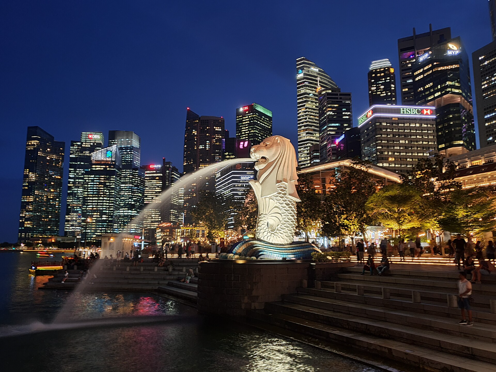

White.png)
See Destinations around the World!

Raja Ampat, Indonesia
Southwest Papua
The Raja Ampat archipelago contains one of the richest marine biodiversity on earth.

Bali, Indonesia
Bali
A tropical paradise known for lush landscapes, surf beaches, and spiritual temples.

Bromo-Tengger-Semeru National Park, Indonesia
East Java
Contains the highest mountain in Java and is one of the more popular hiking destinations in Indonesia.

Jakarta, Indonesia
DKI Jakarta
Jakarta is the economic, cultural, and political center of Indonesia.

Yogyakarta, Indonesia
DI Yogyakarta
Yogyakarta is regarded as an important center for classical Javanese fine arts and culture.

Komodo National Park, Indonesia
East Nusa Tenggara
Home of the Komodo dragon. Hic dracones sunt

Rio de Janeiro, Brazil
Rio de Janeiro
Rio de Janeiro is one of the most visited cities in the Southern Hemisphere. One of it's most famous landmarks is the giant statue of Christ the Redeemer atop Corcovado mountain.

Singapore
Singapore
The little red dot is one of the only remaining city-states in the world.

Bangkok, Thailand
Bangkok Metropolis
The city is known for its street life and cultural landmarks, such as the Grand Palace and several Buddhist temples.

Kuala Lumpur, Malaysia
WP Kuala Lumpur
Kuala Lumpur serves as the cultural, financial, tourism, political and economic center of Malaysia.

Hong Kong, China
Hong Kong SAR
Hong Kong is melting pot a hybrid of Eastern values and Western ideals due to its history as a former British colony.

Tokyo, Japan
Tokyo Metropolis
Tokyo serves as Japan's economic center and the seat of both the Japanese government and the Emperor of Japan.